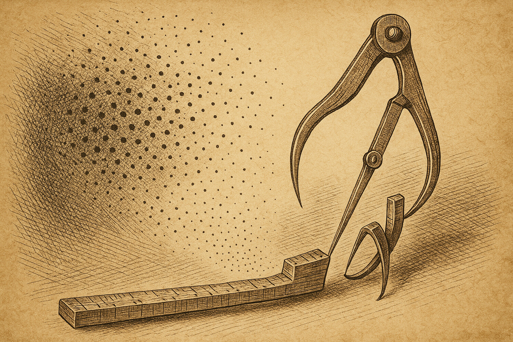

Duellum Veritatis · nightly duel
A nocturnal duel · science explainer
The Yardstick That Shrank
A popular shortcut for comparing how minds organize the world seemed to be cheating — declaring too-simple theories "complete." But was the method lying, or was the measuring stick quietly shrinking along with the data?

Статус: публичный состязательный AI stress-test. Это не peer review, не научное доказательство и не подтверждение тезиса. Две AI-стороны спорили о заранее зафиксированном утверждении по фиксированному протоколу; независимый AI-арбитр вынес структурный вердикт. Для числовых утверждений опубликованные числа происходят только из приложенного воспроизводимого compute bundle. Публикация означает, что выпуск прошёл release gate; она не повышает статус утверждения до открытия.
Status: public adversarial AI stress-test. This is not peer review, not a scientific proof, and not an endorsement of the claim. Two AI-generated sides argued a frozen claim under a fixed protocol; an independent AI arbiter issued a structured verdict. For numerical claims, the reported numbers come only from the attached reproducible compute bundle. Publication means the duel passed the release gate; it does not promote the claim to discovery status.
Retrospective note. Early release, published before the series adopted its current honest-disclosure format. This metadata/disclaimer is added retroactively rather than rewriting the original text. Order-swap arbitration audit: NOT_RUN (waiver: retrospective_release_before_D1b). Protocol status: PARTIAL.
Эпистемический статус (2026-06-13): scout — разведывательная состязательная проба, не научный результат. К этому раннему выпуску не приложен compute bundle и не проводился независимый арбитраж (order-swap audit: NOT_RUN; протокол: PARTIAL); тема лежит на известном поле. Читать как аргумент, а не как находку.
Epistemic status (2026-06-13): scout — an exploratory adversarial probe, not a scientific result. This early issue carries no attached compute bundle and had no independent arbitration (order-swap audit: NOT_RUN; protocol: PARTIAL); the topic is well-trodden ground. Read it as argument, not as a finding.
Suppose you want to know whether a brain, a behavior, or an AI model organizes a set of images the same way you think it does. You can't open the head and read it off. So you do something indirect: for every pair of images you ask "how alike does this system treat them?" and lay the answers out in a grid. That grid — a similarity matrix — is the system's fingerprint. Compare two fingerprints and you compare two minds.
The toolkit in one breath. A representation is the internal arrangement of items inside a system. Its similarity matrix records, for each pair of items, how close together the system places them. Comparing matrices is how neuroscientists put brains, behavior and AI on the same footing — the trade this duel was drawn from.Now a sharper question. You have a candidate theory — a short list of dimensions you believe drive the whole representation (say five: size, animacy, color, and two more). You want a confirmatory test: does my five-dimension theory fully explain the data, or is something missing? The fair bar is the noise ceiling — the best score any theory could earn, given that real measurements are noisy. Hit the ceiling and your theory is "complete." Fall short and something is missing.
Noise ceiling. Because every measurement wobbles, even a perfect theory can't match the data exactly. The ceiling estimates that practical best — usually from how well independent subjects agree with each other. A theory that reaches the ceiling has explained everything that is reliably there to explain.Into this arrives a fashionable shortcut. Instead of comparing raw fingerprints, it first compresses each representation into a handful of non-negative building-block dimensions, then compares those. Call it the compression method. Its selling point: more statistical power — it spots a true match where the blunt direct comparison would miss it. The duel asks whether that power is free.


The stakes
Two step forward. Athos defends the bold thesis; Aramis sets out to topple it. The thesis, in full:
"The compression method's advantage in confirmatory power is not a general property but a consequence of its built-in low-rank, non-negative prior. When the true representation is high-rank and resists compression, the method does not merely lose power — it systematically inflates the rate of false confirmations relative to comparing the similarity matrices directly."
Both agreed on the only honest way to settle it: build worlds with a known answer. Make data whose candidate theory is deliberately incomplete — it knows five dimensions, but the data carry more — and count how often each method wrongly blesses the theory as complete.
The duel: not rhetoric, but arithmetic
Every blow landed as a simulation, not a sentence. And the opening exchanges cleared away two tempting mistakes before the real fault line appeared.
First miss: lost power is not inflation
Athos's opening run made data ever richer than the five-dimension theory and watched both methods. As the true rank climbed past five, both methods stopped confirming — they slid to zero together. The compression method's scores fell faster, but falling faster is losing power, not inventing false "yes" answers. Aramis pounced: "Your own numbers refute you. To prove inflation you must show the compression method saying yes exactly where the direct comparison says no. It isn't there."
Second miss: orthogonal extra structure doesn't fool it
Aramis then added genuinely independent extra dimensions and checked whether the compression method's match score crept up artificially. It did not — the compressed match stayed at or below the direct match everywhere. The simple form of "compression manufactures agreement" was dead.
The trap that looked like a smoking gun
Then Athos found something real. In a narrow band — true rank just above the theory's five — the compression method confirmed the incomplete theory 77.5% of the time while the direct comparison confirmed it 0%. A genuine split, in the predicted direction. But buried in the setup was the move that decided the whole duel: he had computed the noise ceiling in the compressed space too.
Why that matters. The ceiling is usually built from how much subjects agree. Compress every subject first and they agree almost perfectly — compression strips away the private, idiosyncratic structure that is exactly where they used to differ. So the bar drops to "whatever a few dimensions can reach" — which is precisely what a five-dimension theory delivers. The theory clears a bar that has quietly descended to meet it.The decisive thrust: two yardsticks, one method
Aramis forced the clean test, and Athos ran it without flinching: keep the compression method's fit exactly as is, but measure the bar two ways — (A) in the shrunken compressed space, (B) honestly, in the full data space where the discarded structure still makes subjects disagree. If the phantom "inflation" survives the honest bar, the thesis lives. If it vanishes, it was the yardstick all along.
The verdict was in the numbers, not the speeches. Zoom in on the worst case — true rank 8, where the phantom peak is highest — and the two yardsticks give opposite answers from identical data and an identical, genuinely incomplete theory:
Verdict
Aramis wins — the one refuting the thesis. The strong claim, that the compression method systematically inflates false confirmations as a property of the method, does not survive: under an honest noise ceiling the false-confirmation rate is zero at every rank tested. The apparent inflation was an artifact of estimating the ceiling in the compressed space.
A qualified win, and an honest one. Athos lost the thesis but forced a genuinely useful discovery: if a practitioner does measure the ceiling in the compressed space — an easy, tempting mistake — the method will manufacture false confirmations in a band just above its dimension count. The danger is real; it simply lives in the procedure, not in the method.
Where the defense held
Two things keep the losing side from being merely wrong. First, the phantom peak is no fantasy: held the wrong way, the yardstick produces 77.5% false "yes" at rank 8 — a live trap for anyone running these tests. Second, the honest ceiling is not a free lunch. It is stricter everywhere: in this setup it even rejects a theory that is genuinely complete (at rank 5), because the compressed fit never quite reaches the full-space bar. That is the real trade-off the original paper's "power gain" was trying to buy — and which honest testing gives back. So "the method never inflates" is the right verdict; "honest testing is costless" is not.
And a caveat both sides would sign: these are toy worlds with a crude stand-in for the real method, not the full procedure on real brains and models. They settle the logic of the thesis cleanly. They do not certify the method across every regime of real data.
Why this matters beyond the simulation. Confirmatory tests with a noise ceiling are everywhere a field asks "is my model complete?" — neuroscience, psychology, the comparison of AI systems to human minds. The lesson is unglamorous and portable: when you compress your data to gain power, do not compress the bar you judge it against. Hold the yardstick in the full space, or you will keep confirming theories that a fuller look would reject. Where exactly the compressed-space trap bites hardest, and how much power honest testing really costs, is the matter for the next duel.
Appendix · simulation parameters
Setup. 12 simulated "subjects" each see 60 items in a 100-feature space. The shared, model-known signal is built from k = 5 non-negative dimensions; the candidate theory is exactly those 5 dimensions. Higher true rank is created by adding (rank − 5) extra non-negative dimensions of reliable private structure shared across subjects, plus independent measurement noise (level 0.8) per subject.
Compression method. A non-negative matrix factorization to 5 components (multiplicative updates, 200 iterations) stands in for the real method's low-rank non-negative prior. Similarity matrices use 1 − correlation over item pairs.
Confirmatory test. For each run, a paired t-test compares each subject's fit-to-theory against a leave-one-out lower-bound noise ceiling; the theory is "rejected as incomplete" when fit is significantly below the ceiling (p < 0.05). A "false confirmation" is failing to reject when the true rank exceeds 5. Ceiling A is computed in the compressed space; ceiling B in the full data space. Rates are over 40 repetitions per rank.
Numbers shown. Compressed-ceiling false-confirmation rate by true rank (5/8/12/20/30): 100 / 77.5 / 17.5 / 0 / 2.5 %. Honest-ceiling: 0 % throughout. At rank 5 the model is genuinely complete, so a "yes" there is correct, not false.
The numbers are illustrative: they reproduce the duel's key result and do not claim to be a full study. Full reproducibility requires the simulation source code.
© 2026 Occam Research · Licensed under CC BY-NC-ND 4.0